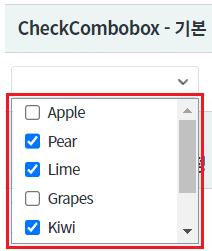
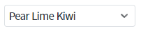
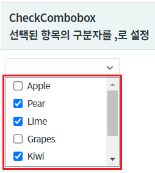
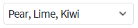
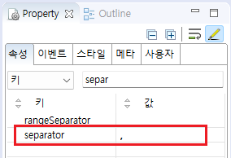

선택된 항목을 출력할 때 항목간 구분자를 설정하는 예제입니다. 기본값은 (빈 공백)입니다.
설정을 통해 선택된 항목같의 구분자를 지정할 수 있습니다.[기본 설정] 선택된 항목의 구분자가 (빈 공백)인 경우
선택된 항목의 구분자가 , 인 경우
목록에서 항목을 선택하고, 선택된 항목간의 구분자를 비교합니다.
[브라우저(Chrome) 실행 예시 - 항목 선택 예시]

선택된 항목이 기본 구분자인 공백으로 구분하여 표시됩니다.
선택된 항목 출력 예시) Pear Lime Kiwi
[브라우저(Chrome) 실행 예시 - 선택된 항목 예시]

[브라우저(Chrome) 실행 예시 - 항목 선택 예시]

선택된 항목이 ", "로 구분하여 표시됩니다.
선택된 항목 출력 예시) Pear, Lime, Kiwi
[브라우저(Chrome) 실행 예시 - 선택된 항목 예시]

컴포넌트의 속성을 정의합니다.
[필수] separator=", " //[default:" "(빈 공백)] 선택된 항목들이 여러 개인 경우 구분자로 사용할 문자를 정의합니다.
그림 1.웹스퀘어5 SP5 스튜디오의 Property View(속성창) 예시

<!-- CheckCombobox의 소스 본문 예시 --> <xf:checkcombobox separator=", "> <!-- 중략 --> </xf:checkcombobox>
separator
[웹스퀘어5 SP5 개발 가이드] CheckComboBox
링크 : https://docs1.inswave.com/sp5_user_guide/8df43d1f59fab704#00d68253341f365d